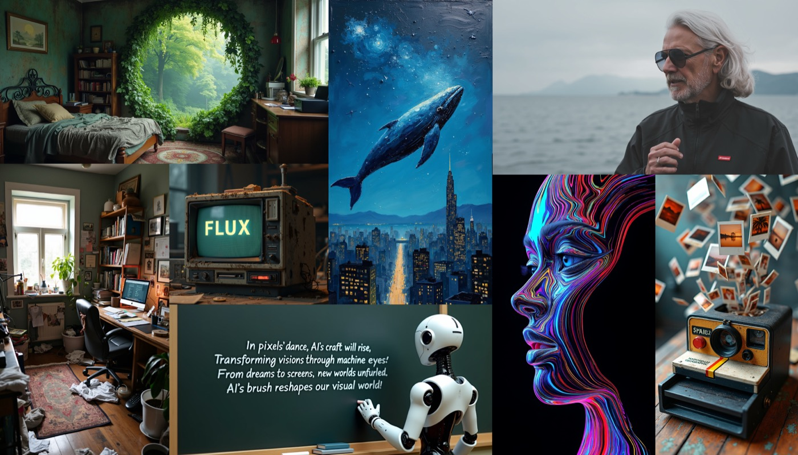
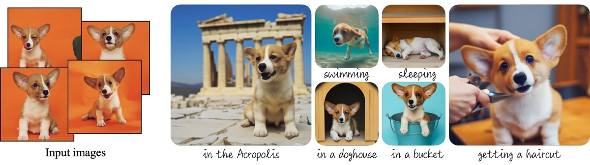

The course
What you will be able to make
This course is about making things with generative models: pictures, edits of real photographs, video, avatars, 3D assets, and worlds you can move around inside. The models are the tools. The subject is the work you can get out of them — how it is actually produced, what it costs, how you tell whether it is any good, and what still breaks.
Weeks 1–3 compress the foundations — what a generative model is, VAEs, the diffusion core, flow matching and latent diffusion, CLIP and text-to-image. Everything after that is creation: controllable image generation, video, avatars, unified any-to-any models, 3D, and world and action models.

Still imageFLUX.1 release grid, Black Forest Labs 2024 · Veo 3 showcase clip, Google DeepMind 2025 · Xiang et al., TRELLIS, CVPR 2025 · Genie 3 blog demo, Google DeepMind 2025.
Prerequisites
- Deep learning fundamentals
- Linear algebra, probability and calculus at undergraduate level
Calendar Tentative
27 meetings
Monday is the lecture. Wednesday is student paper presentations — except in the first three weeks, where the compressed foundations run on both days; in the two project weeks, where both days are yours; and on 30 November, where there is no lecture and both days are presentations.
The presentation sessions run one Wednesday behind the lecture they follow, so you always have a week with the material before you have to argue about the papers around it.
| Week of | Monday | Wednesday |
|---|---|---|
| 31 Aug | L1 · Introduction — the course, the format, the project | L2 · What a generative model is · GANs · evaluation |
| 7 Sep | L3 · Variational Autoencoders | L4 · Diffusion core — DDPM, DDIM, classifier-free guidance |
| 14 Sep | L5 · Flow matching, latent diffusion & the DiT backbone | L6 · CLIP, text-to-image & preference tuning |
| 21 Sep | L7 · Controllable image generation | Presentations — Foundations pool |
| 28 Sep | L8 · Video Generation | Presentations — Controllable image generation |
| 5 Oct | No class — holiday | Presentations — Controllable image generation (2) |
| 12 Oct | No class — midterm period | No class — midterm period |
| 19 Oct | L9 · Controllable Video & Avatars | Presentations — Video Generation |
| 26 Oct | Project proposals — batch 1 | Project proposals — batch 2 |
| 2 Nov | L10 · Omnimodels — unified any-to-any generation | Presentations — Controllable Video & Avatars |
| 9 Nov | L11 · 3D Content Creation | Presentations — Omnimodels |
| 16 Nov | L12 · World Models & Playable Worlds | Presentations — 3D |
| 23 Nov | L13 · World & Action Models | Presentations — World Models |
| 30 Nov | Presentations — World Models 2 | Presentations — World & Action Models |
| 7 Dec | Final presentations — batch 1 | Final presentations — batch 2 + wrap-up · final report due |
Paper presentation
You choose what you present
Each topic carries a pool of at least ten papers, published in advance. You may present a paper from that pool, or bring one of your own that matches the topic. There are eight pools across ten presentation sessions — the controllable-image pool covers two sessions, and 30 November is a second pass over the world-model literature.
You will present three papers across the term — or two, if enrolment is large enough that the slots fill up. Each presentation runs 15–20 minutes — roughly 10–15 minutes of presentation plus 5 minutes of discussion. The number is fixed in week 1, once enrolment settles.
Assessment Tentative
Tentative. Presentations and participation together are worth 60% either way. With a smaller class it is 3 presentations × 15% + 15% participation; with a larger one, 2 × 20% + 20% participation. The split is confirmed in week 1, once the final enrolment is known. Everything else below is fixed.
| Component | Weight | Detail |
|---|---|---|
| Paper presentations | 15% × 3or 20% × 2 | Three across the term — two if the class is large |
| Participation & discussion | 15%or 20% | ≥6 substantive questions across the term — ≥8 if participation is worth 20% |
| Attendance | 10% | Both sessions; two unexcused absences free |
| Project proposal | 10% | The problem · what has been tried before · the project you propose |
| Final report | 10% | 4–6 pages, due 9 Dec |
| Final presentation | 10% |
Participation
Participation is earned by taking part in the sessions other people run — paper presentations, project proposals and final presentations — by asking a question or answering one. Each time counts 2.5% — six times to the 15% total, or eight times if participation is set at 20%.
Paper presentation
| Criterion | Pts | Full marks look like |
|---|---|---|
| Discussion facilitation | 25 | You ask the room real questions and let the argument run |
| Critical analysis | 25 | You say what is new, what is weak, and what would disprove it |
| Technical accuracy | 20 | The mechanisms and attributions are right, and you say what the paper does not show |
| Clarity and structure | 20 | One clear thesis, explained rather than asserted |
| Time management | 10 | You finish on time, with room left to talk |
Project proposal
| Criterion | Pts | Notes |
|---|---|---|
| Problem clarity | 25 | One crisp question, and why it is worth answering |
| Technical soundness | 25 | You know what you are adapting and what stays frozen |
| Evaluation plan | 25 | Named metrics, one baseline, one ablation — and what result would mean it failed |
| Presentation | 25 | The talk makes the case, and you can answer questions about it |
Final presentation
TBA.
The project
The point is to get your hands on these techniques and try something that has not been done before. It does not have to be big — but it should not be an exact reproduction of something already done.
Teams are 1–3 people. A team of three is held to a higher standard of technical contribution than a team of one; the work is expected to scale with the hands on it.

Some examples
Analysis / probing
Find something true about a model that its paper does not say.
Small fine-tune
A LoRA or small adapter on a frozen backbone, for something nobody has published.
Creative application
Compose existing techniques into one end-to-end system, and see whether the output holds up.
Evaluation / benchmark
Measure something the field measures badly.
Reproduction with a twist
Reproduce a result at small scale, then push one variable the authors did not.
Policies
Attendance · use of generative tools
Attendance
Both sessions, every week. Two unexcused absences cost nothing. The session in which you present is mandatory. Sessions are hybrid — Seoul AI Hub or Zoom — and you may interrupt from either room. If you join on Zoom, turn your camera on.
Use of generative tools
This is a course about generative models; using them is expected. Using them without saying so is not. Anything substantially produced by a model — code, prose, figures — is disclosed in the report.